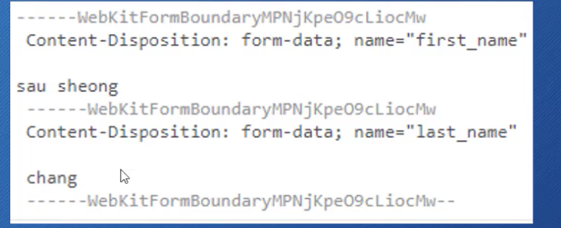

1. 概要
处理请求
模版
中间件
存储数据
HTTPS，HTTP2
测试
部署
2. 处理请求
2.1 Create pro
创建模块
GO111MODULE=on go mod init pro name
helloworld
1 | package main |
2.2 如何处理web请求
http.Handle 函数
http.HandleFunc 函数
2.2.1 创建web Server
两种方式
方式一
http.ListenAndServer()
http.ListenAndServeTLS() https 服务
- 第一个参数是网络地址，
- 第二个参数为handler
- 如果为nil，那么就是DefaultServeMux
- DefaultServeMux 是一个multiplexer（可以看作是一个路由器）
1 | http.ListenAndServe("localhost:8989", nil) |
方式二
http.Server可配置
server.ListenAndServe()
server.ListenAndServeTLS()
1 | server:= http.Server { |
2.2.2 DefaultServeMux
它是一个multiplexer 多路复用器
它也是一个handler
1 | package main |
多个handler
不指定Server struct里面的Handler字段值
可以使用http.Handle将某个Handler附加到DefaultServeMux
- http包有一个Handle函数
- ServerMux struct也有一个Handle方法
如果你调用http.Handle，实际上调用的是DefaultServeMux上的Handle方法
1 | func Handle(patten string, handler Handler) // 注册函数 |
1 | package main |
2.2.3 Handler 函数 - http.HandleFunc
handler是一个接口（interface）
1 | type Handler interface { |
Handler函数就是那些行为与handler类似的函数：
Handler函数的签名与ServeHTTP方法的签名一样，接收：
- 一个http.ResponseWriter
- 一个指向http.Request的指针
Go有一个函数类型： HandlerFunc，可以将某个具有适当签名的函数f， 适配成为一个Handler，而这个Handler具有方法 f
1 | package main |
适配器HandlerFunc
1 | type HandlerFunc func(ResponseWriter, *Request) |
2.2.4 五个内置handler
NotFoundHandler 404
RedirectHandler 返回一个handler，把每个请求使用给定的状态吗跳转到指定的URl
- url，要跳转到的URL
- code，跳转的状态吗（3XX），常见的 StatusMovedPermanently， StatusFound 或 StatusSeeOther
StripPrefix 返回一个handler，它从请求URL中去掉指定的前缀，然后再调用另一个handler
TimeoutHandler
FileServer
1 | func FileServer(root FileSystem) Handler |
返回一个handler，使用基于root的文件系统来相应请求
1 | type FileSystem interface { |
使用时需要用到操作系统的文件系统，所以还需要委托给操作系统的文件系统来获取文件；
1 | type Dir string |
1 | package main |
2.2.5 Request
HTTP请求
Request
URL
Header
Body
2.2.5.1 HTTP消息
HTTP Request 和 HTTP Response
它们具有相同的结构
- 请求（响应）行
- 0个或多个Header
- 空行
- 可选的消息体（Body）
net/http 包提供了用于表示HTTP消息的结构
Request（是个struct），代表了客户端发送的HTTP请求消息
Request（是个struct），代表了客户端发送的HTTP请求消息
重要字段：
- URL
- Header
- Body
- Form，PostForm，MultipartForm
也可以通过Request的方法访问请求中的Cookie、URL、User Agent等消息
Request即可代表发送到服务器的请求，又可代表客户端发出的请求；
2.2.5.2 请求URL
Request的URL字段就代表了请求行（请求信息第一行）里面的部分内容
URL字段是指向url.URL类型的一个指针，url.URL是一个struct：
1 | type URL struct { |
URL通用形式
scheme://[userinfo@]host/path[?query][#fragment]
不可以斜杠开头的URL被解释为：
scheme:opaque[?query][#fragment]
2.2.5.3 URL Query
RawQuery 会提供实际查询的字符串
http://www.example/com/post?id=123&thread_id=456
- 它的RawQuery的值就是id=123&thread_id=456
还有一个简便的方法可以得到Key-Value对： 通过Request的Form字段
2.2.5.4 URL Fragment
如果从浏览器发出的请求， 那么你无法提取出Fragment字段的值；
- 浏览器在发送请求时会把fragment部分去掉
但不是所有的请求都是从浏览器发出的（例如从HTTP客户端包）
2.2.5.5 Request Header
请求和响应（Request、Response）的headers是通过Header类型来描述的，它是一个map，用来表述HTTP Header里的 Key-Value对；
Header map的key是string类型，value是[]string
设置key的时候会创建一个空的[]string 作为value，value里面第一个元素就是新header的值；
为指定的key添加一个新的header值，执行append操作即可
res.Header
- 返回map
r.Header[“Accept-Encoding”]
- 返回：
[gzip,deflate]([]string类型)
r.Header.Get(“Accept-Encoding”)
- 返回： gzip，deflate(string类型)
2.2.5.6 Request Body
请求和响应的bodies都是使用Body字段来表示的
Body是一个io.ReadCloser接口
- 一个是Reader接口
- 一个是Closer接口
Reader接口定义了一个Open方法：
- 参数： []byte
- 返回：byte的数量、可选的错误
Closer接口定义了一个Close方法：
- 没有参数，返回可选的错误；
想要读取请求body的内容，可以调用Body的Read方法
1 | server := http.Server{ |
2.2.5.7 查询参数（Query Parameters）
URL Query
http://www/example.com/post?id=123&thread_id=456
r.URL.RawQuery会提供实际查询的原始字符串
- 上例的RawQuery的值就是 id=123&thread_id=456
r.URL.Query() 会提供查询字符串对应的 map[string][]string
1 | url := r.URL |
2.2.6 Form
2.2.6.1 通过表单发送请求
1 | <form action="/process" method="post" enctype="application/x-www-form-urlencoded"> |
这个HTML表单里面的数据会以name-value对的形式，通过POST请求发送出去
它的数据内容会放在POST请求的Body里面
但name-value对在Body里面的格式是什么样的？
表单Post请求的数据格式
通过POST发送的name-value数据对的格式可以通过表单的Content Type来指定，也就是enctype属性
表单的enctype属性
默认值是：application/x-www-form-urlencoded
浏览器被要求至少要支持： application/x-www-form-urlencoded、multipart/form-data
- html5的话，还需要支持text/plain
如果enctype是application/x-www-form-urlencoded，那么浏览器会将表单数据编码到查询字符串里面。
first_name=alex&last_name=chang
如果enctype是multipart/form-data，那么
- 每一个name-value对都会被转换为一个MIME消息部分
- 每一个部分都有自己的Content Type 和Content Disposition

如何选择？
简单的文本： application/x-www-form-urlencoded
大量数据，（文件上传）： multipart-MIME
- 甚至可以把二进制数据通过选择Base64编码，来当作文本进行发送
表单的GET
通过表单的method属性，可以设置POST还是GET
GET请求没有Body，所有的数据都通过URL的name-value对 来发送
2.2.6.2 字段
Request上的函数允许我们从URL或/和Body中提取数据，通过这些字段：Form，PostForm，MultipartForm
Form里面的数据是key-value对
通常的做法是：
- 先调用ParseForm 或 ParseMultipartForm来解析Request
- 然后相应的访问Form、PostForm或MultipartForm字段
Form
1 | <form action="/process" method="post" enctype="application/x-www-form-urlencoded"> |
1 | http.HandleFunc("/process", func(w http.ResponseWriter, r *http.Request) { |
PostForm
上例中，如果只想得到first_name 这个key 的value，可使用r.Form[“first_name”],它返回含有一个元素的slice: [“Dave”]
如果表单和URL里有同样的Key，那么它们都会放在一个slice里：表单里的值靠前，URL的值靠后；
如果只想要表单的key-value对，不要URL的，可以使用PostForm字段；
1 | <form action="/process?first_name=Leo" method="post" enctype="application/x-www-form-urlencoded"> |
1 | http.HandleFunc("/process", func(w http.ResponseWriter, r *http.Request) { |
PostForm只支持application/x-www-form-urlencoded，必须使用MultipartForm
MultipartForm
想要使用MultipartForm 这个字段，首先需要调用ParseMultipartForm这个方法；
- 该方法会在必要时调用ParseForm方法
- 参数是需要读取数据的长度
MultipartForm只包含表单的key-value对
返回的类型是一个struct而不是map，这个struct里有两个map：
- key是string，value是[]string
- 空的（key是string， value是文件）
1 | <form action="/process?first_name=Leo" method="post" enctype="multipart/form-data"> |
1 | http.HandleFunc("/process", func(w http.ResponseWriter, r *http.Request) { |
MultipartReader
1 | func (r *Request)MultipartReader()(*multipart.Reader,error) |
如果是multipart/form-data或multipart混合的POST请求：
- MultipartReader 返回一个MIME multipart reader
- 否则返回nil和一个错误
可以使用该函数代替ParseMultipartForm来把请求的body作为stream进行处理
- 不是把表单作为一个对象来处理的，不是一次性获得整个map
逐个检查来自表单的值，然后每次处理一个；
2.2.6.3 FormValue & PostFormValue方法
FormValue方法会返回Form字段中指定key对应的第一个value
- 无需调用ParseForm或ParseMultipartForm
1 | <form action="http://localhost:8000/process?first_name=Leo" method="post" enctype="multipart/form-data"> |
1 | http.HandleFunc("/process", func(w http.ResponseWriter, r *http.Request) { |
PostFormValue方法也一样，但只能读取PostForm
FormValue和PostFormValue都会调用ParseMultipartForm方法
但如果表单的enctype设为multipart/form-data，那么即使你调用ParseMultipartForm方法，也无法通过FormValue获得想要的值；
1 | <form action="http://localhost:8000/process?first_name=Leo" method="post" enctype="multipart/form-data"> |
1 | http.HandleFunc("/process", func(w http.ResponseWriter, r *http.Request) { |
2.2.6.4 上传文件（Files）
Multipart/form-data最常见的应用场景就是上传文件（例子）
1 | <form action="http://localhost:8000/process?first_name=Leo" method="post" enctype="multipart/form-data"> |
1 | package main |
FormFile方法
- 上传文件还有一个简便方法：FormFile
1 | func process(w http.ResponseWriter, r *http.Request){ |
无需调用ParseMultipartForm方法
返回指定key对应的第一个value
同时返回File和FileHeader，以及错误信息
如果只上传一个文件，那么这种方式会快一些
2.2.6.5 POST JSON
不是所有的POST请求都来自Form
有很多不同的方式对POST请求编码
- application/x-www-form-urlencoded
- application/json
ParseForm方法无法处理application/json
2.2.7 ResponseWriter
从服务器向客户端返回响应需要使用ResponseWriter
ResponseWriter是一个接口，handler用它来返回响应
真正支撑ResponseWriter的幕后struct是非导出的http.response
问题：
为什么Handler的ServeHTTP（w ResponseWriter, r*Request）,只有一个是指针类型？而w是按值传递的吗？
ResponseWriter本身是一个interface，而它代表了一个指针，这个指针指向response这个struct的。所以它也可以看作是一个指针。所以它的传递也是按引用进行传递的；
1 | type ResponseWriter interface { |
2.2.7.1 写入到ResponseWriter
write方法接收一个byte切片作为参数，然后把它写入到HTTP响应的Body里面；
如果在Write方法被调用时，header里面没有设定content type，那么数据的前512字节就会被用来检测content type
1 |
|
1 | curl -i localhost:8000/write |
2.2.7.2 WriteHeader方法
WriteHeader方法接收一个整数类型（HTTP状态码）作为参数，并把它作为HTTP响应的状态码返回
如果该方法没有显式调用，那么在第一次调用Write方法前，会隐式的调用WriteHeader(http.StatusOK)
- 所以WriteHeader主要用来发送错误类的HTTP状态吗
调用完WriteHeader方法之后，仍然可以写入到ResponseWriter，但无法再修改header了；
1 | func writeExample(w http.ResponseWriter, r *http.Request) { |
2.2.7.3 Header方法
Header方法返回headers的map，可以进行修改
修改后的headers将会体现在返回给客户端的HTTP响应里；
1 | func headerExample(w http.ResponseWriter, r *http.Request){ |
json
1 | func jsonExample(w http.ResponseWriter, r *http.Request){ |
2.2.7.4 内置的Response
NotFound函数，包装一个404状态吗和一个额外的信息
ServeFile函数，从文件系统提供文件，返回请求者
ServerContent函数，它可以把实现了io.ReadSeeker接口的任何东西里面的内容返回给请求者
- 还可以处理Range请求（范围请求），如果只请求了资源的一部分内容，那么ServeContent就可以如此响应，而ServeFile或io.Copy则不行
Redirect函数，告诉客户端重定向到另一个URL
3.connect sql
3.1 Open
sql.Open()
- 参数1 数据库驱动名称
- 参数2 数据源名称
- 返回值 得到一个指向sql.DB这个struct的指针
sql.DB是用来操作数据库的，它代表了0个或者多个底层连接的池，这些连接由sql包来维护，sql包会自动的创建和释放这些连接；
它对于多个goroutine并发的使用是安全的；
Open()函数并不会连接数据库，甚至不回验证其参数，它只是把后续连接到数据库所必需的structs给设置好了；
而真正的连接是在被需要的时候才进行懒设置的；
sql.DB不需要进行关闭（当然你想关闭也是可以的）
它就是用来处理数据库的，而不是实际的连接
这个抽象包含了数据库连接的池，而且会对此进行维护
在使用sql.DB的时候，可以定义它的全局变量进行使用，也可以将它传递函数/方法里；
3.2 如何获得驱动
正常的做法是使用sql.Register()函数、数据库驱动的名称和一个实现了driver.Driver接口的struct，来注册数据库的驱动。
1 | sql.Register("sqlserver", &drv{}) |
但是之前的例子却没有写这句话，为什么？
- 因为Sql Server的驱动，是在这个包被引入的时候进行了自我注册
1 |
|
当go-sql-driver包被引入的时候，它的init函数将会运行并进行自我注册（在Go语言里，每个包的init函数都会在自动的调用）
在引入go-sql-driver 包的时候，把该包的名称设置为下划线_，这是因为我们不直接使用数据库驱动（只需要它起的“副作用”），我们只使用database/sql
这样，如果未来升级驱动，也无需改变代码
Go语言没有提供官方的数据库驱动，所有的数据库驱动都是第三方驱动，但是它们都遵循sql.driver包里面定义的接口
3.3 下载驱动
go get github.com/go-sql-driver/mysql
3.4 PingContext
1 | func (*DB) PingContext |
db.PingContext 函数是用来验证与数据库的连接是否仍然有效，如有必要则建立一个连接
这个函数需要一个Context（上下文）类型的参数，这种类型可以携带截止时间，取消信息和其它请求范围的值，并且可以横跨API边界和进程。
上例中，创建context使用的是context.Background()函数，该函数返回一个非nil的空Context，它不会被取消，它没有值，没有截止时间；
它通常在main函数，初始化或测试中，作为传入请求的顶级Context
1 | ctx := context.Background() |
3.5 查询
sql.DB类型上用于查询的方法有：
- Query
- QueryRow （返回一行）
- QueryContext
- QueryRowContext
3.5.1 Query
返回的类型是 type Rows struct{}
Rows的方法：
1 | func (rs *Rows) Close() error |
3.5.2 QueryRow
返回类型是 type Row struct{}
1 | // 查询遍历中的错误 |
3.6 更新
sql.DB类型上用于更新（执行命令）的方法有：
Exec
ExecContext
1 | func (a * app)Update()(err error) { |
3.7 其它
Ping
PingContext
Prepare
PrepareContext
Transactions
- Begin
- BeginTx
4. 路由
需要给架构增加Controller层
Controller的角色
- main(): 设置类工作，比如设置http server
- Controller:
- 静态资源 （比如css，js文件）
- 把不同的请求送到不同的controller进行处理
go语言提供一个前置的ctrl，所有进来的请求都会经过ctrl，然后由ctrl分发
5. json
1 | type Post struct { |
5.1 类型映射
1 | Go bool: JSON boolean |
5.2 未知结构的JSON如何映射
Map[string]interface{} 可以存储任意json对象
[]interface{} 可以存储任意的JSON数组
5.3 读取JSON
需要一个解码器：
1 | dec := json.NewDecoder(r.Body) |
参数需要实现Reader接口
在解码器上进行编码： dec.Decode(&query)
5.4 写入JSON
需要一个编码器
1 | enc := json.NewEncoder(w) |
参数需要实现Writer接口
编码 ： enc.Encode(results)
1 | func json(w http.ResponseWriter, r *http.Request){ |
Marshal 和 Unmarshal
Marshal （编码）： 把go struct转化为json格式
- Marshalindent, 带缩进
Unmarshal（解码）： 把json转化为go struct
1 | type Company struct { |
两种方式的区别
针对string或bytes：
- Marshal => string
- Unmarshal <= string
针对stream：
- Encode => Stream, 把数据写入到 io.Writer
- Decode <= Stream, 从io.Reader 读取数据
6. 中间件
1 | http.ListenAndServe(addr string, handler Handler)error |
1 | // 想创建handler，必须实现handler接口，需要实现ServeHTTP这个方法 |
6.1 创建中间件
1 | type MyMiddleware struct { |
m.Next.ServeHTTP(w, r) 将该请求转发到下一个handler中。至于下一个handler是什么，这个Next设置成什么，下一个handler就是什么，有可能是nil。在web应用中，如果只有一个中间件的话。那么next就是DefaultServeMux。它就会将这个请求 进行路由。然后进程的处理。
中间件的用途
Logging
安全（请求超时，用户身份认证）
响应压缩
6.2 使用请求上下文
比如中间件设置了请求超时，而这个请求到数据库的时候，这个数据库将会花费很长时间。这个时候就需要让访问数据库的代码知道设置了查询超时时间。这就需要使用到上下文来解决；
1 | func (*Request) Context() context.Context |
1 | type Context interface { |
这些方法都是用于读取，不能进行设置；
Context API - 可以返回新Context
- WithCancal() ,它有一个CancelFunc
- WithDeadline(), 带有一个时间戳 （time.Time）
- WithTimeout(), 带有一个具体的时间段（time.Duration）
- WithValue(), 在里面可以添加一些值；
7. HTTPS
HTTP请求的过程
在http里面，参数都是以明文进行传输的。在客户端和服务端之间其它的东西，比如某个中间人/中间服务器也能懂得传输的信息。所以说，这种传输是非常不安全的 ；
HTTPS
https会稍微给传输层做一点改变，它不是直接在TCP上面传输数据的。会添加一个TLS层，在传输数据的时候，数据首先会被加密。加密之后只有客户端和服务器能够懂得这个加密数据里面真实的内容。中间人/中间服务器即使能获得数据，但是依然无法解析出来内容；也就无法懂得它真正代表的意思了；
7.1 HTTP.ListenAndServeTLS
1 | // ListenAndServeTLS 四个参数 |
go 提供了生成证书的方法
1 | go run /usr/local/go/src/crypto/tls/generate_cert.go -h |
1 | Request Headers |
Headers 以：开头，在go web应用里面，如果从http转到https，那么此应用会自动从http1.1 升级到http2协议。
8. HTTP/2
http2带来效率提升的原因
Http1.1发送请求
- 首先建立tcp连接
- 发送请求时，通常header 和 body捆绑在一起发送的。尽管有时候body比较大，会被分到不同的包中发送。
- 响应返回的时候，基本和请求类似，也是header和body捆绑发送；
这就导致header无法被压缩，header描述了请求或者响应里面的内容比如content-type，length等等，有些时候header比较大。
HTTP2
- 依旧建立TCP服务
- 在TCP里建立stream，stream是在TCP里面独立通信的管道。各个stream不会相互影响。但是允许在同一个链接里面让多个信息来回发送但不相互干扰。在stream里面是通过Frame来发送消息的；所以它在发送请求的时候，不是将header和body绑在一起发送；而是将消息拆成多个Frame进行发送的；而每个Frame又可以单独的进行优化；
有哪些Frame
客户端往服务端发送header的时候，服务器知道它将接收到header。这个过程就能使用到一些压缩算法。
8.1 http2的特点
- 请求多路复用，可以在同一个TCP连接使用stream发送多个请求；
- Header压缩
- 默认安全
- HTTP， 但很多决定不支持HTTP
- HTTPS
- Server Push
没有Server push

没有Server push的时候，请求是一来一回的。
server push
节省了一个步骤，从客户端往服务端请求app.css的部分；
9. 部署
Nohup
1 | nohup ./it & |
守护进程
1 | $> vim /etc/systemd/system/go-web.service |
1 | [Unit] |
1 | sudo systemctl start go-web.service |
10 IM项目
10.1 构建基础server
1 | # 构建 |
1 | # 客户端 |
10.2 用户上线功能
1 | // 需要给server补充两个属性, OnlineMap 和 channel |

OnlineMap
key： 当前用户名
| user.Name | User |
|---|---|
| Name1 | User1 |
| Name2 | User2 |
| Name3 | user3 |
记录当前有哪些用户在线，一个客户端就是一个用户；
用一个User类来表示客户端
1 | type User { |
channel
每个用户都绑定一个channel，专门用来向user实例对应的客户端来发送消息。比如服务器往客户端1发送消息时，服务器就应该将消息发给User1.channel。channel又该如何将消息发送给客户端呢？
每个User实例中都会有一个goroutine，此goroutine应该阻塞监听channel，查看它当中是否有数据存在。一旦监听到数据，立即将数据通过conn写到对应的客户端中；
Message
message本质上是个channel，它属于server的channel。Message是用来将消息进行广播的。（如果当前有一条消息需要让所有客户端都收听到的话）
如何广播？
将消息发送到Message的管道中，Message中除了有管道，还需要有一个goroutine。不断在监听当前管道。一旦监听到有消息时，遍历OnlineMap依次将消息发送给每个的user的channel中；
1 | # server |
10.3 用户消息广播机制
1 | #im1 |
10.4 用户业务层封装
10.5 在线用户查询
10.6 修改用户名
定义一种消息格式
rename|newUsername
10.7 超时强T
用户的任意消息表示用户为活跃，长时间不发消息则视为超时，可强制下线。
那如何判断当前用户是否活跃；
1 | # 实现原理 |
10.8 私聊
同修改用户名一样，也是定义一种消息格式
to|username|send message
10.9 客户端
1 | # build |
11. gin
11.1 创建项目
1 | #create |
11.2 CLD分层
- 协议处理层： 支持各种协议
- Controller： 服务的入口，负责处理路由、参数校验、请求转发
- Logic/Service： 逻辑（服务）层，负责处理业务员逻辑
- DAO/Repository：负责数据与存储相关功能
11.3 通用脚手架
1 | go_boilerplate |
一个新的项目，从程序入口main.go 开始读取；
11.3.1 现有settings设计的问题
到项目后期，新接手的同事比较难一下知道项目中用到的配置信息；
一个优化点：
现在不是把配置文件读取出，之后直接保存到viper变量里面去。而是把它存储到内部定义的结构体中去。
什么意思呢？
就好比，刚开始项目是一个人开发的，他自然知道存在哪些配置。比如viper.GetString("mysql.user")等等；所以这里其实需要有一个类似interface的东西去提示给新开发者较好；这里选用结构体
1 | package settings |
增加结构体之后的流程
- 程序启动时，还是使用viper从配置文件里面去加载信息。
- 加载完信息之后，反序列化结构体变量，放到结构体中去，比如AppConfig。然后在程序中使用的是这个结构体而不是配置文件；
12. Gin_pro
12.1 create sql
1 | CREATE TABLE `user` ( |
12.1.1 primary key与唯一索引
1 | PRIMARY KEY (`id`), "设置primary key" |
12.1.2 user_id
1 | `id` bigint(20) NOT NULL AUTO_INCREMENT, |
- 为何不使用 自增的 id做 user_id，反而另外设一个字段呢
原因一：那别人在你数据库里面注册一个用户，就能知道你的用户量了；
原因二： 当使用分库分表的时候，分成不同的库，那id可能有重复的。（因为每个表的id都自增）
- 为何不使用uuid
uuid生成出来的id 就失去了使用数字来做 用户ID的特点，int可以按照时间来排序，随着时间递增。而uuid是无规律的；检索起来也不是特别的方便。
- 目前主流的方案
大型项目一般使用分布式的ID生成器，
分布式ID的特点
- 全局唯一性： 不能出现有重复的ID标识，这是基本要求
- 递增性： 确保生成ID对于用户或业务是递增的；
- 高可用性： 确保任何时候都能生成正确的ID
- 高性能性： 在高并发的环境下依然表现良好
不仅是用于用户ID，实际互联网中有很多场景需要能够生成类似MYSQL自增ID这样不断增大，同时又不会重复的id，以支持业务中的高并发场景。
比较典型的场景有： 电商促销时短时间内会有大量的订单涌入到系统，比如每秒10w+；
在这些业务场景下将数据插入数据库之前，我们需要给这些订单和消息先分配一个唯一ID，然后再保存到数据库中；
对这个id的要求是希望其中能带有一些时间消息，这样即使我们后端的系统对消息进行了分库分表，也能够以时间顺序对这些消息进行排序；
snowflake算法
雪花算法，它是Twitter开源的由64位整数组成分布式ID，性能较高，并且在单机上递增
snowflake-64bit
- 第一位 占用1bit，其值始终是0，没有实际作用
- 时间戳 占用41bit，单位为毫秒，总共可以容纳约69年的时间，当然，我们的时间毫秒计数不会真的从1970年开始，那样我们系统跑到 2039/9/7 23:47:35 就不能用了，所以这里的时间戳只是相对于某个时间的增量，比如我们的系统上线是2020-07-01，那么我们完全可以把这个timestamp当作是从2020-07-01 00:00:00.000的偏移量
- 工作机器id 占用10bit，其中高位5bit是数据中心ID，低位5bit是工作节点ID，最多可以容纳1024个节点
- 序列号 占用12bit，用来记录同豪秒内产生的不同id，每个节点每豪秒0开始不断累加，最多可以累加到4095，同一豪秒一共可以产生4096个ID；
snowFlake算法在同一毫秒内最多可以生成的ID数量为同一毫秒的ID数量=1024*4096 = 4194304
12.2 登陆注册流程
中文注释的另外一个作用，提供编码思路（有的时候面对功能模块没思路的时候，通过写注释，分析要完成需求的实际步骤）
1 | // 1. 获取参数和参数校验 |
12.2.1 validater做参数校验